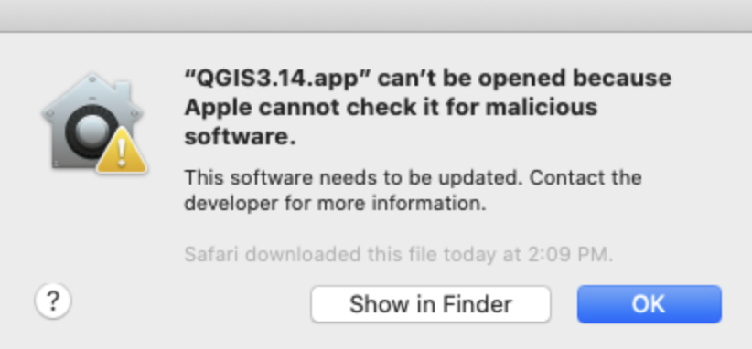

Download QGIS Software
Desktop GIS software is helpful when trying to make sense of census data. We will use free, open-source QGIS.
How to Download QGIS
QGIS is a free and open source desktop GIS software used to create, edit, visualize, analyze, and publish geospatial information on Windows, Mac, Linux, BSD and mobile devices.
How to Download
-
Visit QGIS.org .
-
Select
Download Now. -
Select your desired platform.
Tips
- If you have the option between many installer packages, choose
Standalone Long Term Release - To learn your way around the QGIS interface, you can check out these resources:
Warning

-
If you get an error message that Apple can’t check the app for malicious software, instead of double-clicking the icon to open the program, instead try
right-clicking, and selectOpen. -
You should only have to do this the first time you open the software. This message is popping up because the app is not available through the app store; it is developed through the open source GIS community.